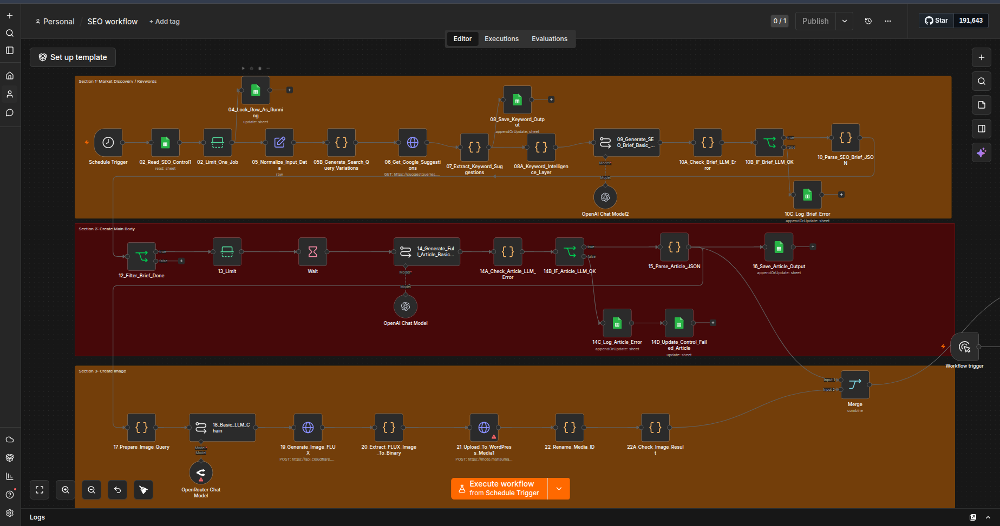
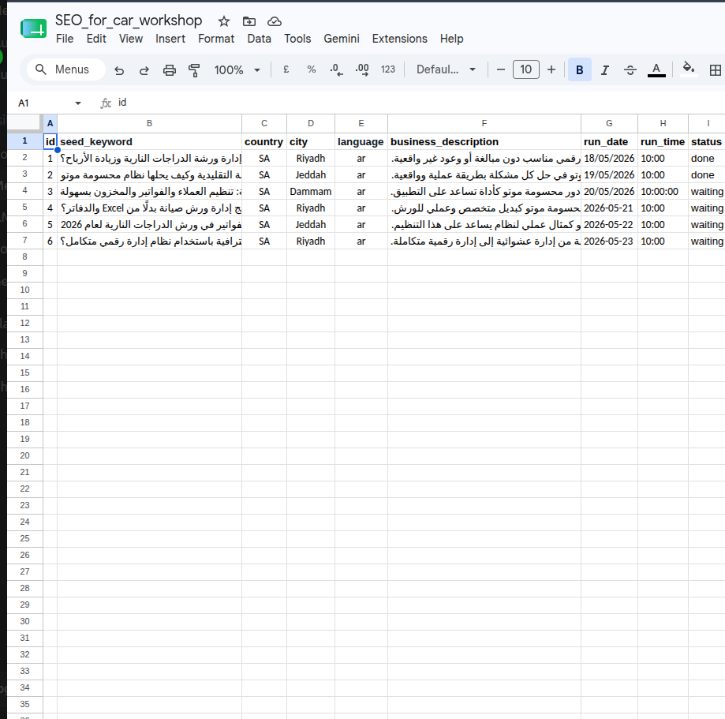
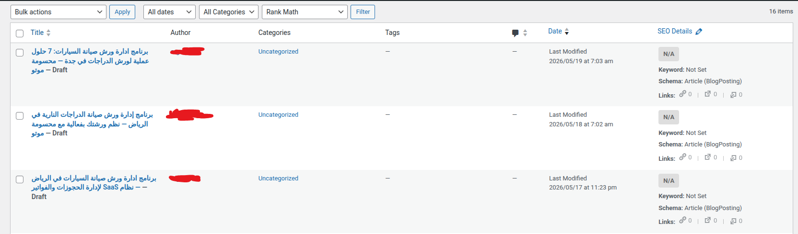

AI-Powered SEO & WordPress Automation Workflow
n8n | Google Sheets | OpenAI | WordPress | Cloudflare AI | SEO Automation
A production-style n8n workflow that automates the SEO content lifecycle from Google Sheets input to review-ready WordPress draft creation. The system handles keyword discovery, SEO brief generation, article writing, featured image generation, quality checks, error logging, and publishing preparation.
Project Overview
This project is an end-to-end SEO content automation system built with n8n. It starts from a Google Sheets control table where each content job is added with a seed keyword, location, language, and business description. The workflow then automates the full production cycle: keyword discovery, content brief creation, article generation, image generation, WordPress draft creation, and status tracking.
The goal was to reduce repetitive manual SEO work and create a scalable workflow that can produce structured, review-ready content drafts while keeping human control through Google Sheets and WordPress draft status.

The Problem
Creating SEO articles manually is time-consuming and repetitive. A typical workflow requires keyword research, search intent analysis, content planning, article writing, image creation, WordPress formatting, and error tracking.
The challenge was not only generating text, but building a reliable automation pipeline that can manage multiple jobs, prevent duplicate processing, handle failures, track statuses, and create WordPress drafts safely without publishing automatically.
The Solution
I designed a modular n8n workflow that connects Google Sheets, Google Suggest, OpenAI, Cloudflare AI image generation, and WordPress. The system reads pending SEO jobs from Google Sheets, locks the selected job as running, expands keyword ideas using Google Suggestions, cleans and filters keyword signals, generates a structured SEO brief, writes a full article in clean HTML, creates a featured image prompt, generates an image, uploads it to WordPress, creates a draft post, and updates the job status.
The workflow includes validation layers, JSON parsing, quality checks, error logging, and status updates to make the process easier to monitor and debug.
Workflow Architecture
The automation is organized into modular stages, each handling a specific part of the SEO content production cycle from job intake to draft creation and error recovery.
- Job Intake & Control — Reads waiting jobs from Google Sheets and processes one job at a time to prevent duplicate runs.
- Input Normalization — Normalizes seed keyword, country, city, language, business description, status, and error fields.
- Keyword Discovery — Generates Arabic search query variations, calls Google Suggest, extracts keyword suggestions, and filters irrelevant terms.
- Keyword Intelligence Layer — Selects final primary and secondary keywords based on relevance, intent, and business context.
- SEO Brief Generation — Uses an LLM to generate a structured SEO brief including title, meta title, meta description, H1, H2 search-intent sections, and FAQ.
- Article Generation — Uses a second LLM step to generate a complete SEO article in clean HTML with direction rules, safe business wording, and FAQ schema.
- Featured Image Generation — Prepares image context, generates an image prompt, creates a featured image, and prepares it for WordPress.
- WordPress Draft Creation — Uploads media, creates a WordPress draft post, assigns the featured image, and keeps the article ready for human review.
- Error Handling & Monitoring — Logs failed stages, node names, error messages, status, timestamps, and input summaries back to Google Sheets.
Job Intake & Control
The workflow uses Google Sheets as a lightweight control panel. Each row represents an SEO job with fields such as seed keyword, country, city, language, business description, status, and error message.
The workflow reads rows marked as waiting, limits execution to one job, updates the selected row to running, and later updates the status to completed or failed depending on the execution result.

System Pipeline
End-to-end data flow from job intake through AI generation to WordPress draft creation and status tracking.
Google Sheets Control
Keyword Discovery
Google Suggestions
Keyword Intelligence
SEO Brief LLM
Article LLM
Image Prompt
AI Image Generation
WordPress Media Upload
WordPress Draft
Featured Image
Status Update
Tools Used
n8n Google Sheets Google Suggest API OpenAI / GPT model Cloudflare AI image generation WordPress API JavaScript Code Nodes HTTP Requests JSON parsing and validation
Key Features
- Google Sheets-based job control system
- One-job-at-a-time processing
- Automatic status updates: waiting, running, failed, done
- Google Suggest keyword discovery
- Keyword cleaning and intent filtering
- AI-generated SEO brief
- AI-generated HTML article
- FAQ schema generation
- Featured image prompt generation
- AI image generation
- WordPress media upload
- WordPress draft creation
- Featured image assignment
- Quality checks before publishing
- Error logging and recovery tracking
WordPress Draft Creation
The workflow prepares the final article content, wraps the HTML based on the article language direction, uploads the generated image to WordPress Media, creates a draft post, assigns the featured image, and stores the WordPress link back in Google Sheets.
Publishing is intentionally kept as a draft-based workflow so a human can review and approve the content before it goes live.

Error Handling & Monitoring
The workflow includes error handling and validation across the brief generation, article generation, image generation, quality check, and WordPress publishing stages. Failed jobs are logged with the failed stage, node name, error message, input summary, status, and timestamp.
This makes the automation easier to debug and safer to operate because errors are not hidden inside the workflow execution history only; they are also visible from the Google Sheets control and error log sheets.
Results / Impact
This workflow turns a manual SEO content process into a scalable automation pipeline. It reduces repetitive work, speeds up content preparation, improves consistency, and creates review-ready WordPress drafts while keeping human approval before publishing.
The system demonstrates practical automation engineering: it handles data intake, external APIs, AI generation, validation, media processing, WordPress integration, and operational monitoring in a single structured workflow.
The system keeps publishing safe by generating drafts only, allowing human review before anything goes live.
Skills Demonstrated
- Workflow automation architecture
- n8n workflow design
- API integration
- Google Sheets automation
- WordPress API integration
- AI content generation pipeline design
- JSON parsing and validation
- JavaScript inside automation workflows
- Error handling and logging
- SEO process automation
- Human-in-the-loop publishing workflow
Engineering Highlights
- Built a full SEO production pipeline from keyword to WordPress draft
- Integrated multiple services into one automated workflow
- Designed control logic using Google Sheets status fields
- Used Google Suggest for market-aware keyword discovery
- Added LLM-based SEO brief and article generation
- Added AI-generated featured image workflow
- Implemented quality checks before WordPress draft creation
- Added failure logging for debugging and operational visibility
- Kept publishing safe by creating drafts instead of auto-publishing